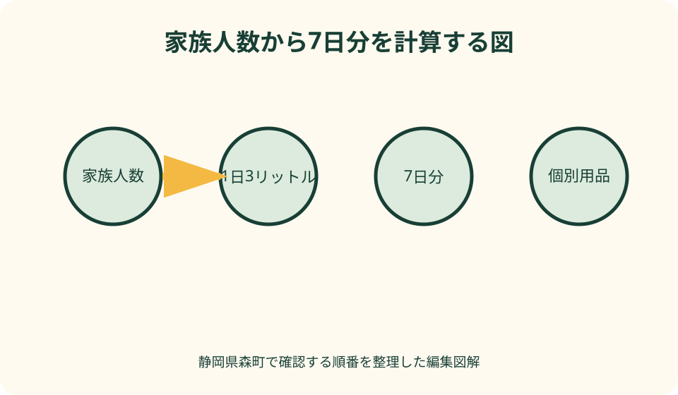
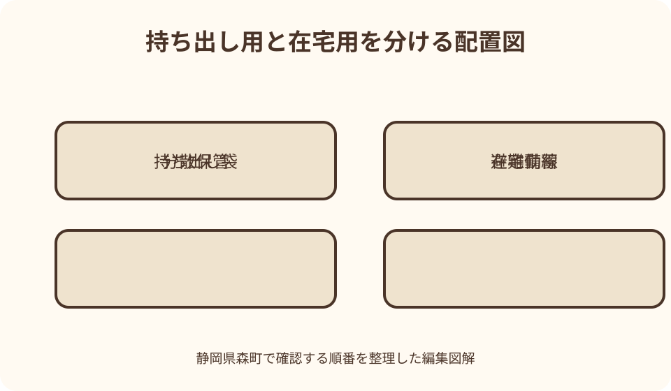

防災・家族の備え｜最終確認 2026-08-10
静岡県森町の家庭備蓄｜水・食料・常備薬を家族人数から考える
備蓄は「非常食を買うこと」だけではありません。森町公式が示す飲料水1人1日3リットルと非常食3日分を出発点に、静岡県が求める7日分へ広げ、家族固有の薬・乳幼児用品・携帯トイレを切らさない仕組みを作ります。

編集イラスト結論：森町の家庭備蓄は「7日間暮らす在庫」として組み立てる
森町公式の「水道施設の災害対策」は、災害時に必要な飲料水を1人1日3リットルと案内しています。静岡県は南海トラフ巨大地震のような広域災害を想定し、飲料水と食料品を1週間分以上備えるよう求めています。この記事では、より長い7日分を家庭の目標にします。
4人家族なら、飲料水だけで3リットル×4人×7日＝84リットルです。2リットル入りの容器なら42本になるため、玄関脇に全部積むのではなく、台所、寝室近く、物置などへ分散します。数字を出すと、保管場所まで含めた準備が必要だと分かります。
一度に全量を購入する必要はありません。最初の週に最低3日分をそろえ、その後の買物で1日分ずつ増やせば、家計と持ち運びの負担を抑えられます。賞味期限の短い物から食べ、使った分を買い戻す方法なら、特別な非常食だけに頼らず続けられます。
町や避難所の備蓄は、家庭の在庫を用意しなくてよいという意味ではありません。道路、店舗、給水、物流の状況は災害ごとに変わります。自宅が安全で在宅避難できる場合に、自分の世帯で数日をつなげる準備として考えるのが基本です。
飲料水は人数と日数を掛けて、生活用水とは別に数える
飲む水、調理に使う水は、生活用水と分けて管理します。飲料水の容器に「掃除にも使える」と期待して先に消費すると、飲用分が不足します。家族ごとの水筒や小容量の水も含め、飲用できる未開封の量だけを計算表へ入れます。
森町公式は、生活用水として洗濯、トイレ、消火などに使う水も必要になると説明し、風呂の残り湯をすぐ流さず貯めておく方法を紹介しています。ただし、浴槽への転落などを防ぐため、ふたをするなど家庭内の事故防止を優先します。
乳児用ミルク、服薬、口腔ケアなどは、通常より水の用途が増えます。粉ミルクを使う家庭は、調乳方法と必要な水の条件を平常時に製品表示や専門職へ確認します。災害時に初めて別製品へ替える前提を置かないことが重要です。
水は重いため、高い棚へ大量に置くと落下や棚の変形につながります。床に近い場所へ分散し、通路と扉をふさがず、容器の変形や漏れを月1回目視します。車内は高温になるので、常設在庫ではなく移動用の少量に限ります。
食料は21食を同じ物で埋めず、食べ方で分ける
静岡県公式は、1週間の目安を1人あたり21食と示しています。しかし、缶詰を21個買えば完成ではありません。開封だけで食べられる物、少量の水で食べられる物、加熱して食べる物に分けると、停電や断水の段階に合わせやすくなります。
最初の1日は、火や大量の水を使わない食品を多めにします。パンの缶詰、栄養補助食品、魚や豆の缶詰、常温保存できる飲料など、家族が普段から食べられる物を選びます。商品名ではなく、開封方法、1食量、ごみの量を確認します。
2日目以降は、パックご飯、乾麺、レトルト食品、乾物などを組み合わせます。カセットコンロがあっても、換気できない場所や火気禁止の環境では使えません。器具の説明書、ボンベの使用期限と保管条件を読み、安全を確認できる場合だけ使います。
主食だけでは食べ続けにくいため、魚、肉、豆、野菜、果物に相当する常温食品も少量ずつ入れます。味の濃い物だけ、甘い物だけに偏らないよう、実際の休日に備蓄品だけで1食を作り、食べ切れる量と組合せを確かめます。
乳幼児・高齢者・アレルギー食は一般備蓄と別枠にする
森町の子育て向け「災害に備えて」は、粉ミルク、哺乳瓶、離乳食、紙おむつ、アレルギー対応食などを家庭状況に合わせて準備するよう案内しています。これらは一般の配給で同じ製品が手に入るとは限らないため、家庭側の優先在庫にします。
離乳食は月齢が進むと内容が変わります。大量に同じ段階の製品を買わず、普段の食事で使いながら更新します。食べ慣れていない味や形状を非常時の主力にせず、子どもが実際に食べたことのある物を中心にします。
高齢者や飲み込みに配慮が必要な人は、硬さ、水分量、容器の開けやすさを確認します。「高齢者向け」という表示だけで決めず、普段の食事と服薬の条件を家族、医療・介護の専門職と共有し、代替候補を記録します。
食物アレルギーがある場合は、家族全員分の備蓄と対象者専用の食品を箱から分けます。原材料表示が読める状態で保管し、期限だけでなく製品変更も確認します。家族が誤って食べないよう、名前と「本人用」を大きく表示します。

常備薬と医療情報は、自己判断で日数を増減しない
常備薬は食品と同じ買い方ができません。処方日数、保存温度、使用期限、災害時の対応を主治医や薬剤師へ平常時に確認します。この記事は薬の追加服用、中止、代替を勧めるものではなく、相談に必要な情報を途切れさせないための整理です。
お薬手帳、処方内容、医療機関と薬局の連絡先、アレルギーや副作用歴を、紙と本人が使えるデジタル手段の両方へ残します。スマートフォンだけに置くと、停電、故障、電池切れで見られない場合があります。
冷蔵が必要な薬や医療機器を使う人は、停電時の保管方法と電源確保を機器の提供元へ確認します。保冷剤を入れればよいと自己判断せず、凍結を避ける必要があるか、何時間まで許容されるかを個別に聞きます。
薬の箱へは、本人名、用途、服用時刻を家族にも分かる範囲で表示します。個人情報なので、屋外から見える場所には置かず、緊急時に同行者や支援者へ何を伝えるかを家族内で決めます。
携帯トイレと衛生用品は水・食料と同じ優先度で考える
断水時は、食事があっても水洗トイレを通常どおり使えない場合があります。森町の持ち出し品例にも携帯トイレ、トイレットペーパー、ポリ袋、除菌用の用品が挙げられています。家族人数、1日の使用回数、備える日数を掛けて必要数を考えます。
携帯トイレは購入しただけでは使い方が分かりません。便器へ袋を取り付ける順序、凝固剤を入れる時点、使用後の密閉方法を説明書で確認します。衛生上の理由から、実物を開けずに同型の練習用を一つ用意する方法もあります。
使用済み品の排出方法は、災害時の町の案内に従います。平常時の分別方法をそのまま適用できるとは限らないため、勝手に集積所へ大量に置かず、収集再開や仮置場の情報を確認します。
手洗い用の水が限られる場面に備え、ウェットティッシュ、手指衛生用品、使い捨て手袋、ごみ袋もそろえます。用途を混ぜないよう、トイレ用と食品用を色や箱で分けます。
持ち出し袋と在宅備蓄を分ける
7日分の水と食料を避難時に一人で運ぶことは現実的ではありません。すぐ避難するための持ち出し袋には、命と当面の移動に必要な最小限を入れ、残りは安全な自宅で使う在宅備蓄として分けます。
持ち出し袋は玄関に置けばよいとは限りません。地震で家具が倒れて玄関へ行けない場合や、夜間に寝室から避難する場合も考え、懐中電灯、靴、眼鏡などは就寝場所の近くにも分散します。
袋の重さは実際に背負って確認します。乳幼児を抱く人、高齢者、けがをしている人に重い荷物を割り当てないよう、家族の役割を固定しすぎません。両手を空けられ、階段や坂を歩ける重さを優先します。
車へ積んだ用品は補助在庫です。大雨、土砂災害、道路寸断、車両の損傷で使えない場合があるため、家庭の全在庫を車内へまとめません。高温で劣化する食品、電池、薬も常置を避けます。
置き場所は森町の災害リスクと家の動線から決める
森町防災ハザードマップで自宅周辺の洪水、土砂災害などの情報を確認します。浸水が想定される場所では床置きだけにせず、落下を防げる高さへ一部を移します。土砂災害のおそれがある部屋へ全量を集中させないことも大切です。
地図の色だけで自宅の安全を断定せず、住所、建物の位置、避難経路、町からの避難情報を合わせて判断します。備蓄が多いことを理由に危険な自宅へ残らず、避難が必要なときは持ち出せる範囲で行動します。
食品は直射日光、高温多湿を避け、床下や屋外物置へ置く場合は製品の保存条件と害虫対策を確認します。重い水は下、軽い紙用品は上にし、棚の転倒防止も一緒に行います。
家族の誰か一人しか場所を知らない状態を避けます。保管場所、内容、期限を簡単な一覧にし、冷蔵庫の内側など家族が確認できる場所へ置きます。防犯上、屋外から備蓄量が分かる表示は避けます。
ローリングストックは買物日と献立へ組み込む
ローリングストックは、備蓄品を期限前に食べ、同じ量を買い戻す方法です。専用食品を保管して忘れるより、米、缶詰、レトルト、乾麺、飲料など普段使う食品を少し多く持つ方が、味や調理法を把握できます。
月1回の点検日を決め、期限が近い物を翌週の献立へ移します。食べた直後に買い戻せない場合は、買物メモへ商品ではなく「主食2食分」「たんぱく源3食分」のように役割を書きます。
家族構成は変わります。乳児の月齢、介護食、転居、就学、服薬内容の変更があったときは、期限を待たずに見直します。食べられなくなった食品を非常用だからと残さないことが、実用性を保つ要点です。
値上がり時に無理なまとめ買いをせず、毎回一つ追加する方法でも構いません。予算を水、食料、衛生、電源、薬関連に分け、代替できない物から先にします。

停電を想定し、照明・情報・調理を別々に用意する
停電時の電源は、照明、連絡、情報収集、医療機器で優先順位が異なります。スマートフォン用の充電池があっても、室内照明や医療機器を動かせるとは限りません。機器ごとに必要な電圧、容量、接続方法を確認します。
懐中電灯は人数分に近づけ、電池を機器から外して保管するかどうかを説明書で確認します。ろうそくは余震や転倒による火災の危険があるため、照明の第一選択にしません。
ラジオ、町の防災情報、気象情報など複数の受信手段を準備します。通信障害や電池切れを想定し、重要な連絡先、避難先、家族の集合方法は紙でも持ちます。
カセットコンロや発電機は、屋内での一酸化炭素中毒や火災を防ぐため、製品の使用場所を守ります。発電機を室内、車庫、換気の悪い場所で使わず、燃料の保管も法令と説明書に従います。
良い点：家庭の条件に合わせると、平常時にも役立つ
家庭備蓄の良い点は、災害時だけでなく、感染症、けが、悪天候、交通障害などで買物へ行けない日にも使えることです。普段食べる物を中心にすれば、期限管理が特別な作業になりません。
必要量を数字にすると、家族内の分担が具体的になります。「防災をしよう」ではなく、「今月は水12リットルと携帯トイレ20回分を増やす」と決められます。
アレルギー食、常備薬、乳幼児用品を別枠にすると、一般備蓄では代替できない条件が見えます。本人だけでなく、家族も保管場所と注意点を共有できます。
町公式、静岡県公式、製品表示という確認先を分けることで、古いチェックリストをそのまま使わずに済みます。量は公的目安、使い方は製品説明、個別の健康条件は専門職へ確認する整理ができます。
注文したい点：一覧だけでは家の容量と個別事情を決められない
公的な持ち出し品一覧は準備の入口として有用ですが、世帯人数、住宅の収納、家族の健康状態まで自動で計算してくれるものではありません。チェックを付けただけで完了とせず、実際の量と置き場所へ落とし込む必要があります。
森町公式では非常食3日分の例があり、静岡県は1週間分以上を求めています。違いを矛盾と考えず、まず3日分を確保し、広域災害への備えとして7日分へ増やす二段階で読むと実行しやすくなります。
防災用品には広告上の便利さと、家庭で本当に使えるかの差があります。セット商品だけで終えず、アレルギー表示、開封具、必要な水、火気、廃棄方法を一品ずつ確認します。
備蓄の保管場所が家族に共有されていないと、本人が不在のときに使えません。一方で個人情報や薬を誰でも見られる場所へ出す問題もあるため、共有範囲を決める必要があります。
代案・結論：収納や予算が厳しい場合は3日分から段階的に増やす
7日分を置けない場合は、何も備えない結論にせず、まず3日分の水、食料、携帯トイレを優先します。次に、日常在庫として米、乾麺、缶詰、飲料を一つずつ増やします。
収納が小さい住宅では、箱のまま置かず、ベッド下や家具の下部など複数箇所へ分散します。ただし避難動線、扉、窓、点検口をふさがず、地震で飛び出さない収納にします。
食品の購入が難しいときも、家族の薬、アレルギー食、乳幼児用品など代替が難しい物を先にします。一般食品は買物のたびに追加し、期限が近い物を日常の食事へ移します。
最終的な結論は、量の達成だけでなく、家族が場所を知り、期限内に使え、避難時に持ち出しと在宅分を判断できる状態を作ることです。
大石の視点：備蓄表は家族の暮らしを写す小さな台帳になる
大石の視点では、家庭備蓄は物を集める作業ではなく、家族の人数、健康、食事、移動、住宅の弱点を見直す台帳づくりです。必要量を計算すると、誰に何が欠かせないかが具体的になります。
森町は町なかと山間部で店舗や移動の条件が同じではありません。日常の買物先までの距離、道路が使えない場合、公共交通の運休も考え、家庭ごとの在庫日数を決めます。
水84リットルという数字だけを達成しても、棚が倒れる、期限が切れる、家族が場所を知らないのでは役立ちません。量、保管、更新、共有の4点を一つの表へまとめます。
年2回、家族で一食だけ備蓄品を使う日を作ると、開けにくい容器、足りない水、好みに合わない味、ごみの多さが分かります。気付きを次の買物へ戻すことが、続く防災になります。
今日から行う最終チェック
最初に、家族人数×3リットル×7日で水の目標を計算します。現在の未開封水を数え、差分を3回以上の買物へ分けます。
次に、家族一人ずつ「普段と違う物」を書き出します。薬、眼鏡、補聴器、アレルギー食、ミルク、介護食、生理用品、ペット用品などです。
持ち出し袋と在宅用の箱を分け、保管場所、期限、数量を一覧にします。森町防災ハザードマップと避難所情報を開き、自宅に残る前提だけで計画していないか確認します。
最後に、森町公式の防災情報、水道施設の災害対策、子育て世帯向けの備え、静岡県の食料品備蓄ページを家族へ共有します。半年後の見直し日をカレンダーへ入れたら、最初の備蓄計画は完了です。
公式情報・確認先
掲載内容は次の一次情報を基礎に整理しました。営業、料金、催し、交通は変わるため、出発前または手続き前にリンク先で最新情報を確認してください。
- 水道施設の災害対策（静岡県森町、2026-08-10確認）
- 災害に備えて（静岡県森町、2026-08-10確認）
- 防災情報（静岡県森町、2026-08-10確認）
- 森町防災ハザードマップ（静岡県森町、2026-08-10確認）
- 食料品の備蓄（静岡県、2026-08-10確認）